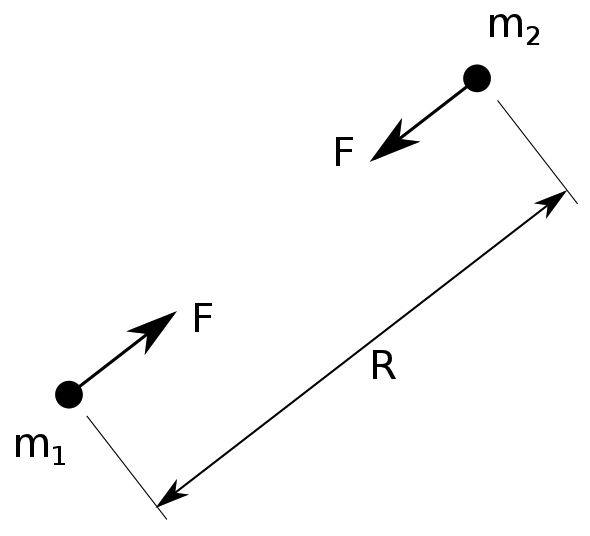

Table of Contents
This document describes the Orbit program, written in Java, for use in seeing the role of calculus in everyday physical simulations. The program demonstrates orbital motion in two dimensions for either an arbitrary (random) selection of spherical masses of various sizes, or for the Solar System’s dynamics starting from an arbitrary initial condition.
Two masses (in this case very, very large masses of the planetary bodies) are attracted to each other by a force that can be expressed as

where F is force, G is the gravitational constant (not Earth’s gravity), m1 and m2 are the two masses, and R is the distance between the two masses.

The value of the gravitational constant, G, is

This is a tiny, tiny number, and explains why trashcans don’t leap off the ground and attack even relatively large masses like yours truly.
The acceleration of each planetary body is a result of the sum of the gravitational attraction to each other body divided by its own mass; the Sun is by far the largest and thus most influential, but the Moon (for example) is more strongly attracted to the Earth due to the relative proximity of the two.
To split the acceleration into two dimensions (X and Y) we can use the fact that the portion of force in either dimension is proportional to the ratio of distance in that dimension to total distance:


and we can quickly arrive at equations of motion in both the X and Y dimensions using Euler’s method numerical integration

and in the Y dimension:

The executable program is found in Orbit.jar, but before it can run, a third-party open-source program (the Lightweight Java Graphics Library, lwjgl) needs to be installed in the appropriate place on the computer.
See the README.html file for installation instructions.
Once the installation is complete, the program can be run by double-clicking the Orbit.jar file.
Modifications to the random objects orbital system must be made in the source code, found in the src folder of the distribution package. We used the open-source NetBeans integrated development environment (IDE) to develop this program, but any other Java development system can be used, including a simple text editor. Describing how to implement these tools to do Java development is outside the scope of this document.
The necessary parameters to change the number, size, distribution, density and volume of the random system can be adjusted in the Orbit.java main class, found in the src/main/java/org/jaxfam/orbit folder.